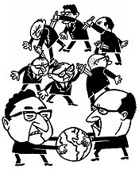

Double Cross Words |
A couple of weekends ago, with war in Iraq looming on the not-so-distant horizon, France, seen as a troublesome impediment to European unity, was isolated by her traditional allies and left to fend for herself. Still, in an eleventh-hour effort to gain a diplomatic foothold, she pleaded with England. Ambassadors for the two countries wandered off to a table in a relatively calm corner. "I feel like a puppy dog, and you keep kicking me, and I haven't even pissed on the floor yet," France noted, sounding like a hybrid of Woody Allen and Tony Soprano. "I mean, what's goin' on? Whaddaya doin' here?" If only NATO's members could talk to each other like this, there might be more genuine world understanding. But this particular international maneuvering is taking place on the twelfth floor of the Denver Tech Hyatt Regency Hotel, during a hotly contested game of Diplomacy. Still, the pressure is intense. France, as represented by Edi Birsan, a slouching Brooklyn native, is growing increasingly irritated with England's ambassador -- Steve Smith, a square-faced Nebraskan with a bowl haircut who insists on double-crossing Birsan and instead grants his favors to the Russians.  "I'm tryin' to establish relations here," Birsan explains. "But that requires you sayin' you're gonna do something and then actually doin' it." England/Steve nods. "Can you forgive?" he asks. "I can and I do," says France/Birsan.
Locals could be forgiven for not noticing that the World Diplomacy Championships took place a couple of weeks ago in Denver. The board game is, speaking generously, played by a thousand people worldwide, give or take, so it's not even as popular as, say, Nuggets basketball. Still, each and every player is a certified fanatic, many traveling around the world at regular intervals to play in tournaments. Last year's finals were held in Canberra, Australia; next year's will be in Birmingham, England. "Diplomacy is the best possible game," asserts Maryland's Martin Pierce, who, as Turkey during a Saturday-morning game, was on the cusp of being wiped off the face of Europe by a daunting alliance between England and Russia. "It kind of ruins you for other games." Not only that, he continues, Diplomacy has real-life applications. "I don't necessarily want to lie to other people in the real world," he says. "But I do like knowing how to spot when I'm being lied to. It's a good alternative social skill." "I got the game as a Christmas present from a family...I guess today you'd call him a 'counselor,'" Edi Birsan recalls. "He felt the game would help me deal with socialization issues over anger management." "Diplomacy has enabled me to succeed in life," adds Manus Hand, a top-ranked player from Parker. "I'm able to get things I want now, which, if I didn't know how to play people, I couldn't have. For example, I usually get a good deal on cars, whereas before I used to just pay full price." The Diplomacy World Championships are being staged as part of Ghengis Con, one of the largest gaming conventions in the country. Started a little over twenty years ago by the 25-year-old Denver Gamers Association, the convention is a gathering that combines staggering creativity, lousy nutrition and a fair number of alternative social skills. "It's just a different part of society," clarifies Heather Barnhorst, an organizer. While most people may think of Monopoly when they think of games, the term "gamer" has much wider connotations. "We don't even have Monopoly here," Barnhorst says. Instead, think Warhammer 40K. "It's set in the year 40,000, and different races" -- the Space Marines are good, the Tyranids are bad -- "are fighting each other for, I guess you could say, supremacy," Barnhorst explains. "Or survival -- let's put it that way." Call of Cthulhu is also very big: "You spend a lot of time running around trying to prevent horrors from taking over the universe," says Barnhorst. "It's very visually appealing." Another huge draw, of course, is Dungeons and Dragons. Although the popularity of D&D had waned since its heyday -- when it was blamed for carjacking kids' minds to the dark side -- about a year and a half ago, the role-playing science fiction game was re-launched in a third edition, D20, with an open-gaming license. The agreement, combined with the new version of the game, has sparked another wave of interest. A relatively new form of gaming is represented by Magic: The Gathering. An adult science-fiction game featuring collectible Pokémon-like cards, Magic took the slumping industry by storm in the mid-1990s. At their peak, about eight years ago, collectible games accounted for nearly 90 percent of the industry's revenue, says Barnhorst, who manages Attactix, a game store in Aurora. Some of the cards sell for as much as $300. And that's not even including other draws, such as Lunch Money ("You're a bunch of kids in school beating each other up to get lunch money," she explains), or Puffing Billy, a popular train-gamer diversion invented in Denver. Or historical miniature action-figure games; or live-action role-playing games, in which participants dress up in period costume and take on fictional characters' personalities for the entire weekend -- an explanation for the occasional storm trooper or pirate-looking gamer wandering through the convention. In all, Barnhorst says, about 1,500 people come to Ghengis Con from all over the country. None of this is of particular interest to Diplomacy players, however. "They're very serious about this," explains Barnhorst. "There's a lot of whispering and then yelling." Which might explain why the Diplomats were given the entire twelfth floor of the Hyatt, far away from the milling crowds of lesser gamers. The feeling is mutual. "It's all the others who are the nerds," insists Hand, who very briefly gained notoriety a few years back when his quest to visit the burial spots of all the U.S. presidents became public. "We don't sit around with twenty-sided dice or have little pieces of cardboard that fall down when you breathe. We're not the guys who live in our parents' basement until age 45. We need to shower; there's a social component to our game." The game of Diplomacy was invented in 1958 by a postal worker who, like so many drawn to the USPS, had a personality that seems to have ping-ponged between brilliant and disturbed. "While I think Allan Calhamer invented a great game, his ability to express himself clearly in the written word was not one of his strong points," an editor of the magazine Diplomania wrote in an addendum to a 1966 essay penned by Calhamer. "The above article was heavily edited in parts to make it intelligible." In the mid-1940s, Calhamer became infatuated with the complex and shifting alliances in pre-World War I Europe. It took him fifteen years to perfect the game that is said to have become a favorite of John and Robert Kennedy, as well as Henry Kissinger, which could be a recommendation -- or not. Diplomacy peaked in popularity in the 1960s and '70s, then faded away. Players say it is making a comeback thanks to the Internet. The mechanics of the game are very simple. In practice, however, Diplomacy turns on the same close study of human psychology and motivation that is the foundation of today's reality television shows like Survivor and The Mole. "The game rewards strategic partnerships -- strategically broken," explains Hand, who is also head of the Association of Rocky Mountain Area Diplomacy Adversaries (ARMADA). "Diplomacy gets a bad rap for being a lying game. I'm not saying it isn't. It's a game of interpersonal relationships." Besides, he adds, "If you get lied to, it's probably your own fault. You should've seen it coming." Seven players represent each of the major players in turn-of-the-twentieth-century Europe: England, France, Germany, Russia, Austria-Hungary, Italy and Turkey. Each is given an army and a fleet to work with. The goal is to gain control of a majority of the European political divisions, represented by supply centers. Moves on the board are made after each player writes orders for his armies and fleets and places them in a box. If that were it, however, the game would be nothing more than another version of the board game Risk, which manipulates armies around the world according to a roll of the dice. Diplomacy, by contrast, is a very human game. That's because gaining an advantage is impossible without forming alliances. "The game, in short, is a paradox," wrote an analyst in one of a surprisingly large number of learned essays about Diplomacy available for study. "I cannot win unless you help me, but you want to win, too, so why should you help me?" The main action takes place between moves. Alliances are formed in intimate and occasionally clandestine meetings away from the table. Russia will nod to, say, England, and the two will go off to a corner to discuss whether the latter will agree to refrain from attacking Moscow so that Russia can make an uncontested move on Turkey. England may agree -- but is equally likely to stab Russia in the back and advance eastward anyway. Just like real life. A Diplomacy tournament thus looks uncannily like a real session of the United Nations, with people wandering off into corners and private tables to chat sotto voce -- all the while watching to see who is meeting with whom in other corners. It also resembles the UN in that the players are overwhelmingly male. ("It's too confrontational for most women," Barnhorst hypothesizes.) Human trust is a commodity that is swapped and sold far more than actual territory. Because flagrant dishonesty is such a big part of Diplomacy, the game isn't for everyone. "There's a large segment of the population that won't play," admits Steve Smith, who has been playing for fifteen years. "Their feelings are hurt too easily. Most people, if they get lied to or betrayed, they can't handle it." Not coincidentally, lawyers and psychologists are usually well represented at tournaments. The game also once enjoyed a surge of popularity in prisons. For aficionados, the game of Diplomacy is never quite finished. Players are always sizing up one another before, during and after games in an effort to see how truthful each is -- not just for the next game, but in general. "What my opponent does today will affect the games next year -- and it never, never ends," says Smith. "I was a lunatic when I started," Edi Birsan says. "I was Diplomacy's first juvenile delinquent. I forged letters, called someone on the telephone pretending to be someone else, convinced one guy I was a girl in a mail game in order to manipulate him. A lot of the turn-on of Diplomacy, particularly as a kid, is that it's a game in which this sort of behavior is encouraged; you're not held to anything you say or do to another person. You can listen in on conversations, lie, dissemble." That, of course, was a long time ago. Birsan is now considered Diplomacy's elder statesman -- a man who has several world championships, dozens of articles and nearly three dozen Diplomacy conferences under his belt. His style today is one of shrugs and why nots more than outright lies. People leave private conversations with him thinking, "It's nice to work with such a mensch." Also at today's table is Edward Hawthorne, winner of last year's Denver tournament. "There are some people who are loud and belligerent -- which works for them," says Hand. "People are afraid to stab them because they'll yell and scream and badmouth you." Hawthorne is the opposite. His face is a study of calm impassivity. "Yelling or being forceful is not good in any venue," he explains. Early on, Birsan good-naturedly takes over most of Germany. "Sorry about that," he tells a tall man representing the country as the guy departs the game table only a couple of hours into it (Diplomacy games can take as long as eight hours). "No, fine," Germany responds, not really meaning it. "You're a good player. It's fine." Birsan shrugs as the man strides away. "It's important people don't take this personally." "We tell each other, 'Don't take it personally,' but we're all so invested in selling our plan that we get depressed when others don't see it our way," Hawthorne admits. Still, that is the high point of Birsan/France's game for quite a while. England (Smith) and Russia (Hawthorne) have formed an alliance that is making him nervous. And with good reason. Soon, England attacks -- despite Smith's assurances that, of course, he would do no such thing. So Birsan turns to Italy, represented by thirteen-year-old Aaron Bernhardt, who showed up at the tournament with three of his middle-school friends. Pulling the teenager aside, Birsan seems hurt. "Why are we fooling around with each other?" "Wellll," Bernhardt answers uncertainly. "You attacked me." "Yeah, but it was with Turkey," Birsan points out. "Besides, that's all changed now. So why don't we change? We gotta stop putzing around. So stop the obsession with Tunis, and work with Austria to take Serbia back." Bernhardt shrugs. "Okay," he says. Later, Birsan also manages to convince England to betray Russia, which takes Hawthorne off guard. "I had left my whole backside open," he says. "That's by design. You need to display trust with your ally -- but also be able to recover quickly." "Trust, but verify," says Birsan. Meanwhile, despite an impossible position, Turkey continues to hang on only out of spite; he resents a doublecross by the teenager. "I basically know I'm dead," he tells Birsan. "My main motivation now is to attack Italy. That's the only reason I'm hanging around." "I understand," Birsan says sympathetically. The game ends in an unusual -- and unsatisfying -- five-way draw, with every country but Germany and Austria holding on to some part of Europe. After a tense drinking incident late Saturday night, which caused several diplomats to withdraw from the competition (just like real life!), the World Diplomacy Championships end Sunday morning. Hawthorne finishes second, Birsan 29th. The title is taken by a Frenchman named Vincent Carry, who has the peculiar negotiating skill of relying on his extremely poor English skills to not say much of anything. Upon learning of his victory, he leaps up and runs screaming in French up and down the hotel hall. "Oh, well," sighs Hand. "I suppose they have to be good at something."
|
|
|
Eric Dexheimer (eric.dexheimer@westword.com)
|